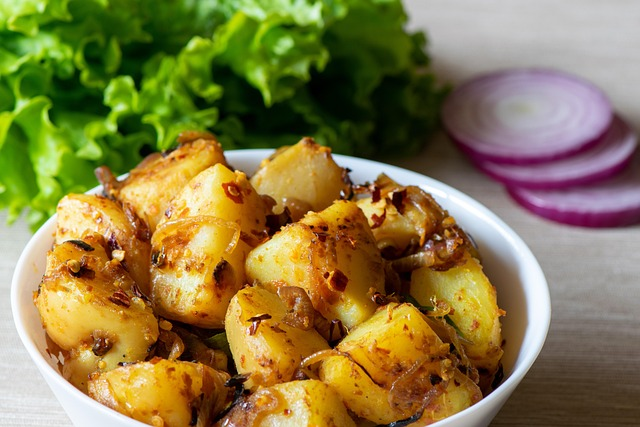

Home
Mushroom and Potato Curry

Image by
Kavinda F
from Pixabay
Description
"Create a tasty, spicy vegetarian dish with mushroom and curry in less than half an hour"
Recipe by BBC Good Food
Ingredients
- 1 tbsp oil
- 1 onion, roughly chopped
- 1 large potato, chopped into small chunks
- 1 aubergine, trimmed and chopped into chunks
- 250g button mushrooms
- 2-4 tbsp curry paste (depending on how hot you like it)
- 150ml vegetable stock
- 400ml can reduced-fat coconut milk
- chopped coriander, to serve
Steps
-
Heat the oil in a large saucepan, add the onion and potato. Cover, then
cook over a low heat for 5 mins until the potatoes start to soften.
Throw in the aubergine and mushrooms, then cook for a few more mins.
-
Stir in the curry paste, pour over the stock and coconut milk. Bring to
the boil, then simmer for 10 mins or until the potato is tender. Stir
through the coriander and serve with rice or naan bread.